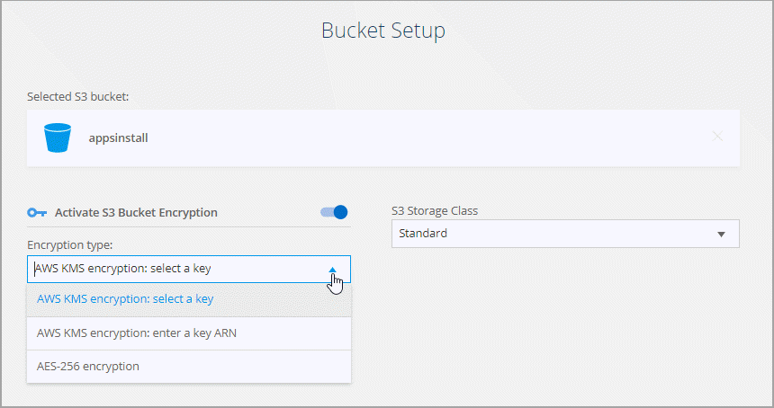

请求文档变更
请求文档变更 在 GitHub 上编辑
在 GitHub 上编辑 提供者指南
提供者指南创建同步关系
创建同步关系时、 Cloud Sync 服务会将文件从源复制到目标。初始副本完成后、服务将每 24 小时同步所有更改的数据。
在创建某些类型的同步关系之前，您需要先在 Cloud Manager 中创建一个工作环境。
为特定类型的工作环境创建同步关系
如果要为以下任一项创建同步关系，则首先需要创建或发现工作环境：
-
适用于 ONTAP 的 Amazon FSX
-
Azure NetApp Files
-
Cloud Volumes ONTAP
-
内部 ONTAP 集群
-
创建或发现工作环境。
-
单击 * 画布 * 。
-
选择与上述任何类型匹配的工作环境。
-
选择 Sync 旁边的操作菜单。

-
选择 * 从此位置同步数据 * 或 * 将数据同步到此位置 * ，然后按照提示设置同步关系。
创建其他类型的同步关系
使用以下步骤将数据同步到或不同步适用于 ONTAP ， Azure NetApp Files ， Cloud Volumes ONTAP 或内部 ONTAP 集群的 Amazon FSX 以外的受支持存储类型。以下步骤提供了一个示例，说明如何设置从 NFS 服务器到 S3 存储分段的同步关系。
-
在 Cloud Manager 中，单击 * 同步 * 。
-
在 * 定义同步关系 * 页面上，选择源和目标。
以下步骤提供了如何创建从 NFS 服务器到 S3 存储区的同步关系的示例。

-
在 * NFS Server* 页面上，输入要同步到 AWS 的 NFS 服务器的 IP 地址或完全限定域名。
-
在 * 数据代理组 * 页面上，按照提示在 AWS ， Azure 或 Google Cloud Platform 中创建数据代理虚拟机，或者在现有 Linux 主机上安装数据代理软件。
有关详细信息，请参阅以下页面：
-
安装数据代理后，单击 * 继续 * 。

-
在 * 目录 * 页面上，选择顶级目录或子目录。
如果 Cloud Sync 无法检索导出，请单击 * 手动添加导出 * 并输入 NFS 导出的名称。

如果要同步 NFS 服务器上的多个目录、则必须在完成后创建其他同步关系。 -
在 * AWS S3 Bucket* 页面上，选择一个存储分段：
-
向下钻取以选择存储桶中的现有文件夹或选择在存储桶内创建的新文件夹。
-
单击 * 添加到列表 * 以选择与您的 AWS 帐户无关的 S3 存储分段。 "必须将特定权限应用于 S3 存储区。"。
-
-
在 * 分段设置 * 页面上，设置分段：
-
选择是否启用 S3 存储分段加密，然后选择 AWS KMS 密钥，输入 KMS 密钥的 ARN 或选择 AES-256 加密。
-
选择 S3 存储类。 "查看支持的存储类。"。

-
-
【设置】在 * 设置 * 页面上，定义源文件和文件夹在目标位置的同步和维护方式：
- 计划
-
为将来的同步选择重复计划或关闭同步计划。您可以计划一个关系以每 1 分钟同步一次数据。
- 同步超时
-
定义如果同步未在指定的小时数或天数内完成、Cloud Sync 是否应取消数据同步。
- 通知
-
用于选择是否在Cloud Manager的通知中心接收Cloud Sync 通知。您可以为成功的数据同步、失败的数据同步和已取消的数据同步启用通知。
- 重试
-
定义在跳过文件之前、 Cloud Sync 应重试同步文件的次数。
- 比较依据
-
选择 Cloud Sync 在确定文件或目录是否已更改并应重新同步时是否应比较某些属性。
即使取消选中这些属性， Cloud Sync 仍会通过检查路径，文件大小和文件名来将源与目标进行比较。如果有任何更改，则会同步这些文件和目录。
您可以选择启用或禁用 Cloud Sync 以比较以下属性：
-
* mtime* ：文件的上次修改时间。此属性对目录无效。
-
* uid* ， * gid* 和 * 模式 * ： Linux 的权限标志。
-
- 复制对象
-
启用此选项可复制对象存储元数据和标记。如果用户更改了源上的元数据，则 Cloud Sync 会在下次同步时复制此对象，但如果用户更改了源上的标记（而不是数据本身），则 Cloud Sync 不会在下次同步时复制对象。
创建关系后，您无法编辑此选项。
包含 S3 兼容端点（ S3 ， StorageGRID 或 IBM 云对象存储）的同步关系支持复制标记。
以下任一端点之间的 " 云到云 " 关系支持复制元数据：
-
AWS S3
-
Azure Blob
-
Google Cloud 存储
-
IBM 云对象存储
-
StorageGRID
-
- 最近修改的文件
-
选择排除在计划同步之前最近修改的文件。
- 删除源上的文件
-
选择在 Cloud Sync 将文件复制到目标位置后从源位置删除文件。此选项包括数据丢失的风险，因为源文件会在复制后被删除。
如果启用此选项，则还需要更改数据代理上 local.json 文件中的参数。打开文件并按如下所示进行更新：
{ "workers":{ "transferrer":{ "delete-on-source": true } } } - 删除目标上的文件
-
如果文件已从源文件中删除，请选择从目标位置删除这些文件。默认情况下，从不从目标位置删除文件。
- 文件类型
-
定义要包括在每个同步中的文件类型：文件、目录和符号链接。
- 排除文件扩展名
-
通过键入文件扩展名并按 * 输入 * 来指定要从同步中排除的文件扩展名。例如，键入 log 或 .log 排除 * 。 log 文件。多个扩展不需要分隔符。以下视频提供了简短演示：
- 文件大小
-
选择同步所有文件、无论文件大小如何、还是仅同步特定大小范围内的文件。
- 修改日期
-
选择所有文件，无论其上次修改日期、在特定日期之后修改的文件、特定日期之前或时间范围之间的文件。
- 创建日期
-
如果 SMB 服务器是源服务器，则可以通过此设置在特定日期之后，特定日期之前或特定时间范围之间同步创建的文件。
- ACL —访问控制列表
-
通过在创建关系时或创建关系后启用设置，从 SMB 服务器复制 ACL 。
-
在 * 标记 / 元数据 * 页面上，选择是将密钥值对另存为传输到 S3 存储分段的所有文件的标记，还是为所有文件分配元数据密钥值对。


将数据同步到 StorageGRID 和 IBM 云对象存储时，也可以使用此功能。对于 Azure 和 Google Cloud Storage ，只有元数据选项可用。 -
查看同步关系的详细信息，然后单击 * 创建关系 * 。
-
结果 *
-
Cloud Sync 开始在源和目标之间同步数据。
从 Cloud Data sense 创建同步关系
Cloud Sync 与云数据感知相集成。在 Data sense 中，您可以使用 Cloud Sync 选择要同步到目标位置的源文件。
从 Cloud Data sense 启动数据同步后，所有源信息都包含在一个步骤中，只需输入几个关键详细信息即可。然后，选择新同步关系的目标位置。